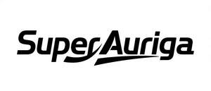

Trade Mark Journal No.2025/020 16 May 2025
UK00004196137 29 April 2025 (3,6,7,8,9,10,11,12,16,17,18,19,20,21,24,25,27,28)

- Class 3
- Make-up; Polishing preparations; Cleaning preparations; Laundry preparations; Perfumery; Essential oils; Abrasives; Incense; Deodorants for human beings or for animals; Cosmetics for animals.
- Class 6
- Common metals, unwrought or semi-wrought; Pipes of metal; Buildings, transportable, of metal; Framework of metal for building; Wire of common metal; Locks of metal, other than electric; Ironmongery; Signs, non-luminous and non-mechanical, of metal; Containers of metal [storage, transport]; Works of art of common metal.
- Class 7
- Agricultural machines; Printing machines; Food preparation machines, electromechanical; Kitchen machines, electric; Tools [parts of machines]; Hand-held tools, other than hand-operated; Electric welding apparatus; Washing apparatus; 3D printers; Agricultural implements other than hand-operated.
- Class 8
- Hand tools, hand-operated; Manicure sets; Hand implements for hair curling; Razors, electric or non-electric; Depilation appliances, electric and non-electric; Table cutlery [knives, forks and spoons]; Hair clippers for animals [hand instruments]; Borers; Side arms, other than firearms.
- Class 9
- Surveying apparatus and instruments; Protection devices for personal use against accidents; Signs, luminous; Humanoid robots with artificial intelligence for use in scientific research; Stands for photographic apparatus; Integrated circuits; Sound transmitting apparatus; Chemistry apparatus and instruments; Life saving apparatus and equipment; Eyeglasses.
- Class 10
- Esthetic massage apparatus; Ear picks; Sex toys; Incontinence sheets; Thermometers for medical purposes; Orthopaedic articles; Hearing aids; Babies' bottles; Babies' pacifiers [teats]; Dental apparatus, electric.
- Class 11
- Lamps; Cooking utensils, electric; Refrigerating apparatus and machines; Air-conditioning apparatus; Heating apparatus; Hair driers; Bath fittings; Water purifying apparatus and machines; Sanitary apparatus and installations; Regulating and safety accessories for water apparatus.
- Class 12
- Seat covers for vehicles; Vehicles for locomotion by land, air, water or rail; Bicycles; Windscreen wipers; Pushchairs; Brake pads for automobiles; Anti-skid chains; Upholstery for vehicles; Safety seats for children, for vehicles; Trolleys.
- Class 16
- Paper; Signboards of paper or cardboard; Paper towels; Office requisites, except furniture; Pictures; Plastic film for wrapping; Stationery; Writing instruments; Tablemats of paper; Drawing materials.
- Class 17
- Flexible hoses, not of metal; Caulking materials; Substances for insulating buildings against moisture; Anti-dazzle films for windows [tinted films]; Insulating fabrics; Junctions, not of metal, for pipes; Gaskets; Insulating materials; Duct tapes; Stops of rubber.
- Class 18
- Pocket wallets; Luggage tags; Bags; Canes; Umbrellas; Leather leashes; Trunks [luggage]; Reins for guiding children; Travelling sets [leatherware]; Clothing for pets.
- Class 19
- Insect screens, not of metal; Shutters, not of metal; Plywood; Tiles, not of metal, for building; Reinforcing materials, not of metal, for building; Lumber; Memorial plaques, not of metal; Buildings, transportable, not of metal; Building materials, not of metal; Coatings [building materials].
- Class 20
- Furniture; Packaging containers of plastic; Work benches; Picture frames; Cushions; Kennels for household pets; Pillows; Furniture fittings, not of metal; Indoor window blinds [shades] [furniture]; Identity plates, not of metal.
- Class 21
- Utensils for household purposes; Tableware, other than knives, forks and spoons; Glass flasks [containers]; Kitchen utensils; Drinking vessels; Insect traps; Brush goods; Cosmetic utensils; Mouse traps; Cleaning instruments, hand-operated.
- Class 24
- Textile material; Curtains of textile or plastic; Non-woven textile fabrics; Quilts; Bed linen; Loose covers for furniture; Household linen; Tablecloths, not of paper; Pillowcases; Felt.
- Class 25
- Sleep masks; Underclothing; Hats; Clothing; Gloves [clothing]; Shawls; Shoes; Hosiery; Neck scarfs [mufflers]; Girdles.
- Class 27
- Carpets; Mats; Artificial turf; Floor coverings; Wallpaper; Decorative wall hangings, not of textile; Textile wallpaper; Gymnasium mats; Non-slip mats; Floor mats, fire-resistant, for fireplaces and barbecues.
- Class 28
- Games; Toys; Balls for games; Pumps specially adapted for use with balls for games; Christmas trees of synthetic material; Archery implements; Machines for physical exercises; Fishing tackle; Climbers' harness; Knee guards [sports articles].
Shanghai Changkai Technology Co., Ltd.
Representative: ILVCN LIMITED